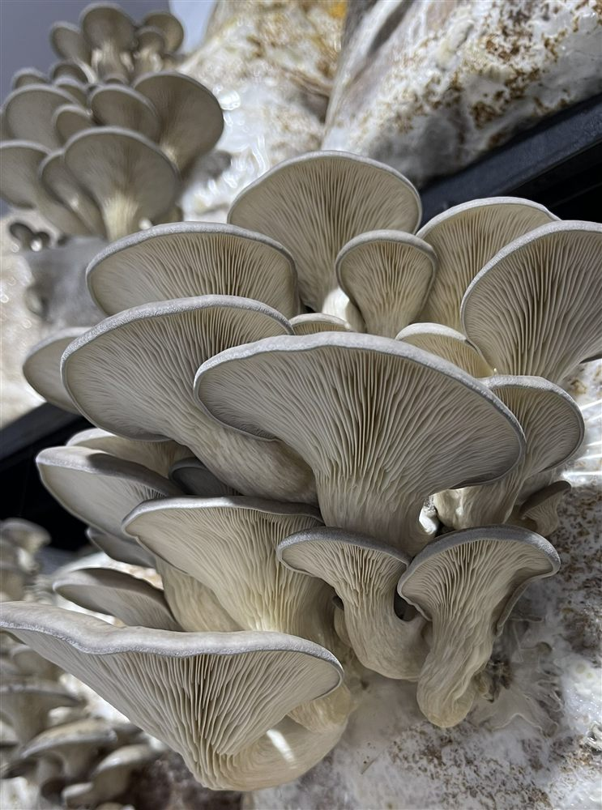
img/ostra.jpgOstra / Pleurotus
Pleurotus ostreatus
Carnoso y versátil, la base de la cocina con hongos.
Osorno · Región de Los Lagos · Chile
Producción propia de hongos gourmet y de interés funcional. Frescos y deshidratados de la mejor calidad, con conocimiento y método detrás de cada lote.
01 Quiénes somos
Hongos del Sur es una empresa de Osorno, en la Región de Los Lagos, dedicada al cultivo y desarrollo de productos derivados de hongos.
Controlamos cada etapa: sustratos, inoculación, control de contaminación, fructificación, cosecha y deshidratación. Trabajamos con método y protocolos propios para entregar hongos de calidad constante, lote tras lote.
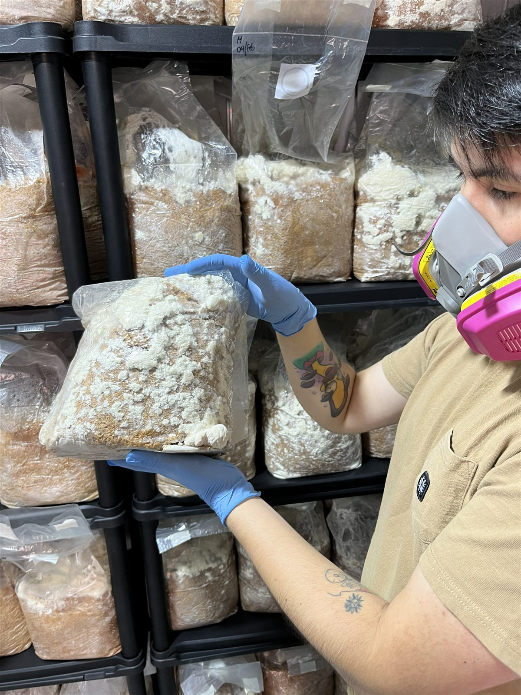
Foto del proceso / producción02 Nuestros hongos
Gourmet y de interés funcional. Trabajamos con cada especie según su técnica y su punto óptimo de cosecha.

img/ostra.jpgPleurotus ostreatus
Carnoso y versátil, la base de la cocina con hongos.
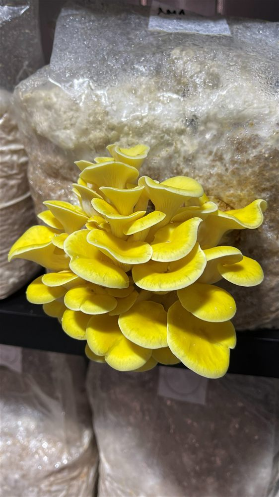
img/ostragolden.jpgPleurotus citrinopileatus
Amarillo vibrante y aroma delicado, con un toque anuezado.
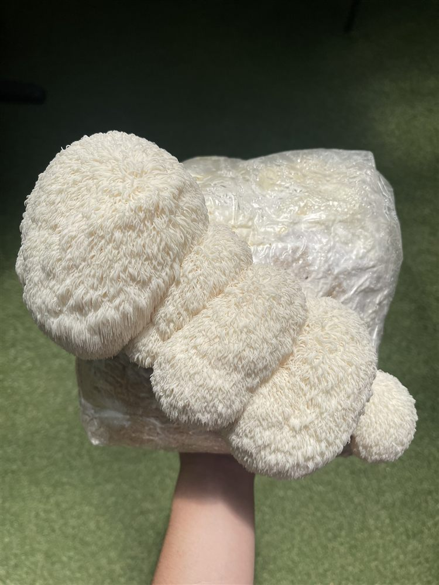
img/melena.jpgHericium erinaceus
Delicado, recuerda al marisco. Textura única.
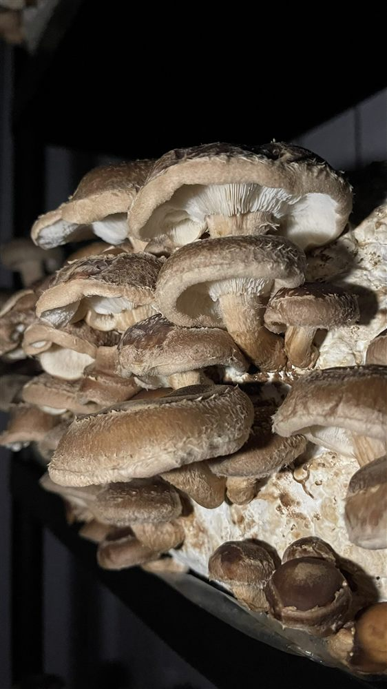
img/shiitake.jpgLentinula edodes
Intenso y umami, un clásico con cuerpo.
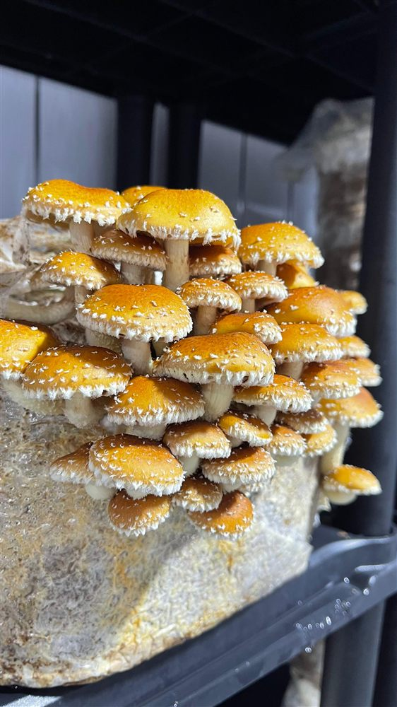
img/chestnut.jpgPholiota adiposa
Crujiente, con notas a frutos secos.
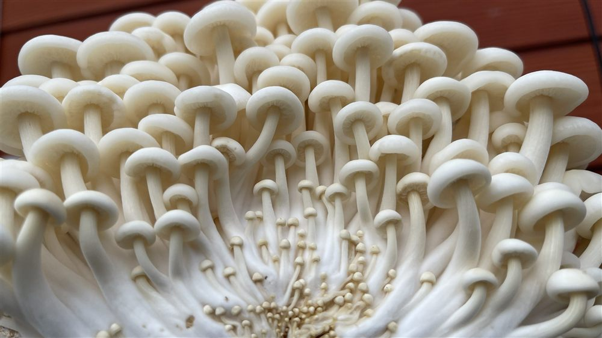
Tu fotoFlammulina velutipes
Finos y crocantes, delicados al paladar.
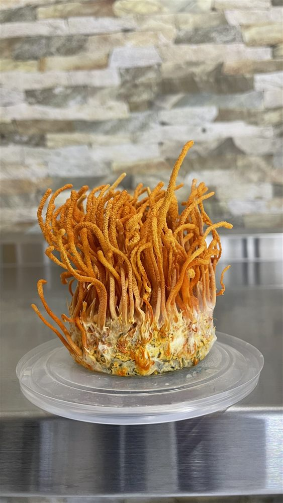
img/cordyceps.jpgCordyceps militaris
De color naranja intenso; funcional, asociado a la energía.
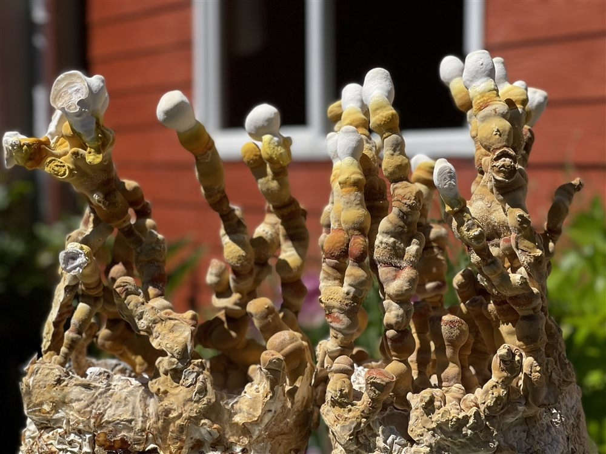
Tu fotoGanoderma sp.
Leñoso y aromático; de interés funcional.
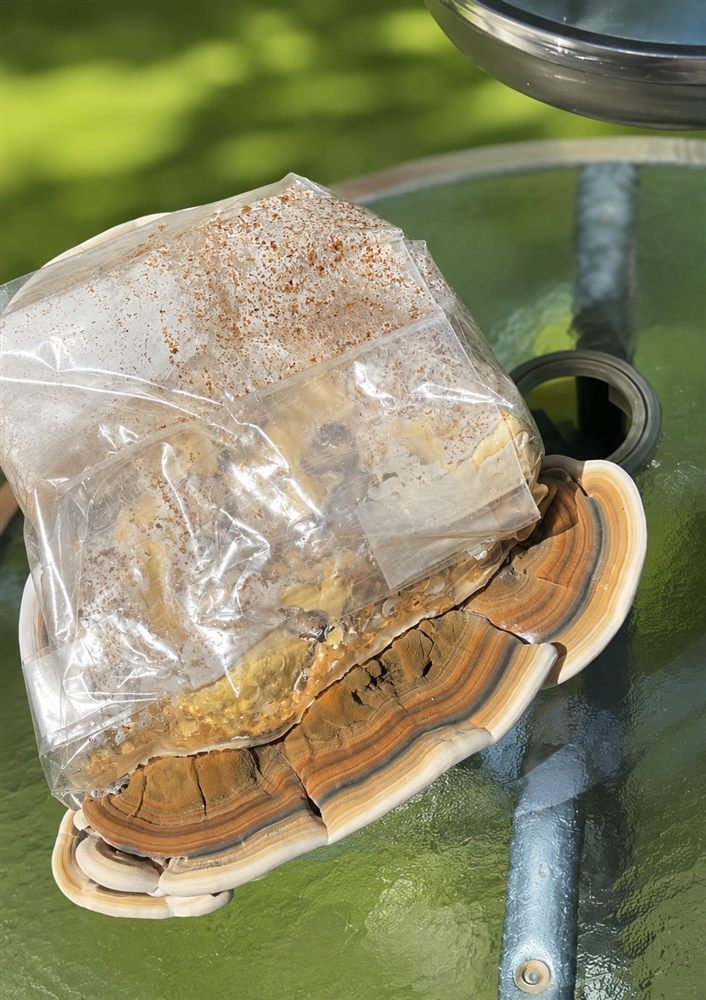
Tu fotoTrametes versicolor
Anillos de color; de interés funcional.
Sobre las propiedades funcionales. Algunas especies son de interés por sus compuestos (betaglucanos, polisacáridos, entre otros) y son objeto de estudio científico. Compartimos esta información con fines educativos: no hacemos afirmaciones médicas ni prometemos tratamientos o curas.
Información con respaldo científico y fines educativos. No constituye consejo médico. Ante dudas de salud, consulta a un profesional.
03 Nuestro proceso
Controlamos cada etapa, del sustrato a la cosecha.
Preparamos el sustrato de cada especie.
Sembramos el micelio en condiciones limpias.
Nacen y crecen los hongos.
Cosechamos a mano, en su punto óptimo.
04 Productos
Disponibilidad según temporada y lote. Escríbenos para conocer el stock actual.
Cosechados a pedido, en su punto óptimo de sabor y textura. Hongos frescos de la mejor calidad, para hogares, restaurantes y ferias.
Consultar disponibilidad →Conservan aroma y sabor concentrados, con larga duración. Prácticos para cocina y despacho a todo Chile.
Consultar disponibilidad →Trabajamos con negocios que quieran comercializar o cocinar con nuestros hongos. Conversemos un plan de abastecimiento.
05 Nuestro método
Desde la genética hasta la cosecha, desarrollamos y controlamos nuestros propios procesos.
Trabajamos con técnicas de cultivo estéril, aislamiento y conservación de cepas, formulación de sustratos y control de contaminación. Contamos con equipamiento especializado para trabajar en condiciones controladas.
Manejamos el cultivo desde su etapa microscópica con protocolos definidos y un flujo de trabajo que nos entrega resultados consistentes, lote tras lote.
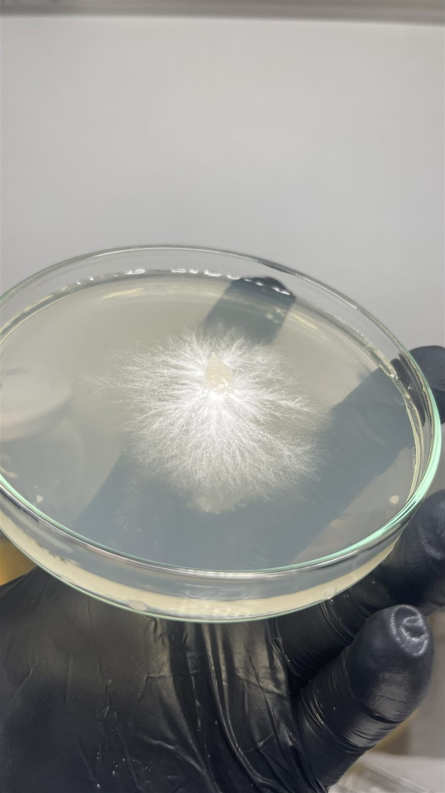
Foto de laboratorio / trabajo técnico06 Galería
Imágenes reales de nuestro trabajo. Iremos sumando más.
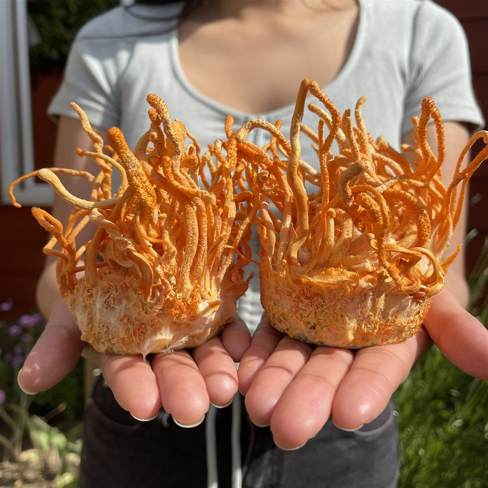
Tu foto